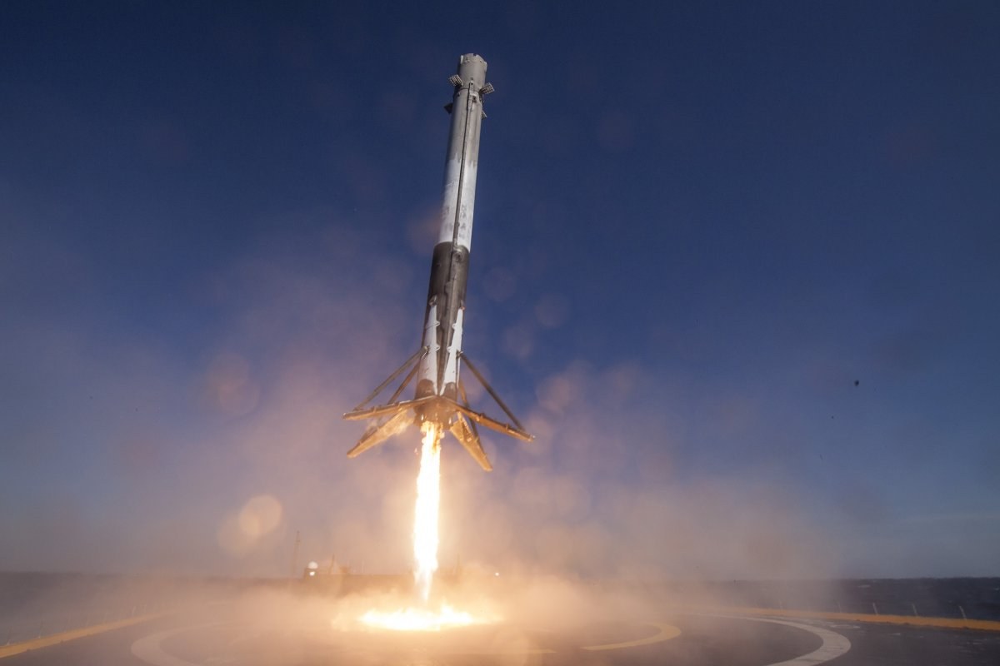

A Falcon 9 egy űrhajózási hordozórakétacsalád, melyet a SpaceX (Space Exploration Technologies) fejlesztett ki és gyárt az Egyesült Államokban. A kétfokozatú rakéta első indítását 2010. június 4-én hajtották végre (v1.0), a jelenlegi (v1.2, Block 5) változat 2018. május 11-én debütált. A hordozó a Falcon családjának tagja, tervezett Falcon 5 helyett lépett szolgálatba, a már korábban kifejlesztett Falcon 1 részegységein alapul (az egyes típusok elnevezésének 1-5-9 számjelei a rakétákba épített hajtóművek számára utalnak).
A rakétát műholdak pályára állítására, illetve a Dragon űrhajóval a Nemzetközi Űrállomáshoz utánpótlás és személyzet szállítására használják, mely szintén újrafelhasználható, így képes tudományos anyagokat is visszajuttatni a földre (a Szojuz kapszulát a legénység számára tartják fenn, míg a Progressz, ATV, Cygnus, Kounotori modulok egyszer használatosak, a légkörbe lépéskor elégnek).
Bővebben: https://hu.wikipedia.org/wiki/Falcon_9
A rakétacsalád egyedülálló tulajdonsága a tervezett újrafelhasználhatóság, ami az első fokozat esetében irányított ereszkedéssel és aktív fékezéssel, a rakétafokozat ismételt begyújtásával érnének el, a kilövésből megmaradó üzemanyag felhasználásával. Bár az eredeti tervek még a teljes rendszer újrafelhasználhatóságát célozták, jelenleg az csak az első fokozat estén megoldott teljes körűen, míg az orrkúp-burkolat ("fairing") visszatérése kísérleti fázisban tart: irányított siklóernyő és a visszatérő burkolatot fogadó elkapó-hajó segítségévelA második fokozat újrahasznosítását a hivatalos tervek szerint, a beépítendő hőpajzs többletsúlya miatt elvetettékde a cégvezető Elon Musk 2018 év eleji nyilatkozatai szerint újra napirendre vették. A fejlesztés korai fázisában a rakétafokozatokat ejtőernyővel szerelték fel, hogy az óceán felszínén landolhassanak, ám ez a megközelítés a tengervíz korrozív jellemzői miatt csak a kísérleti eszközök tanulmányozását célozta volna, és nem járt sikerrel, mert a visszatérő elemek az ereszkedés közben fellépő erőhatások és melegedés hatására darabjaikra hullottak.
